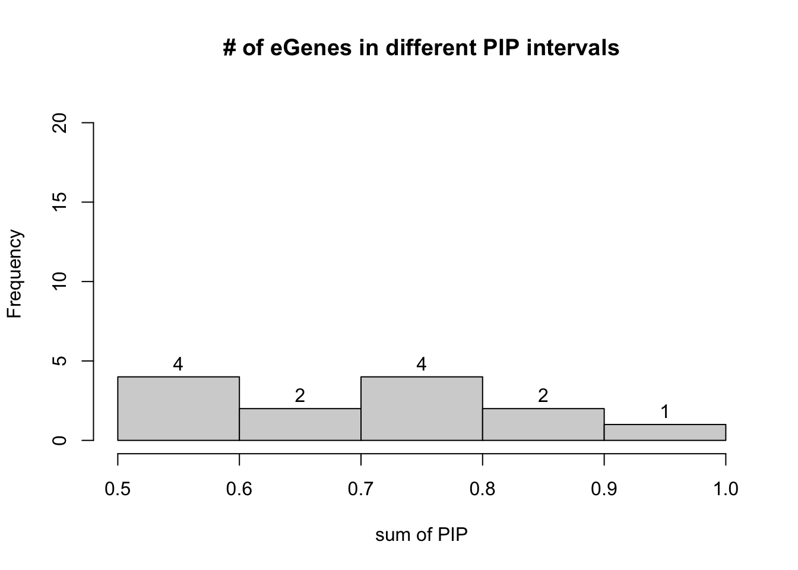
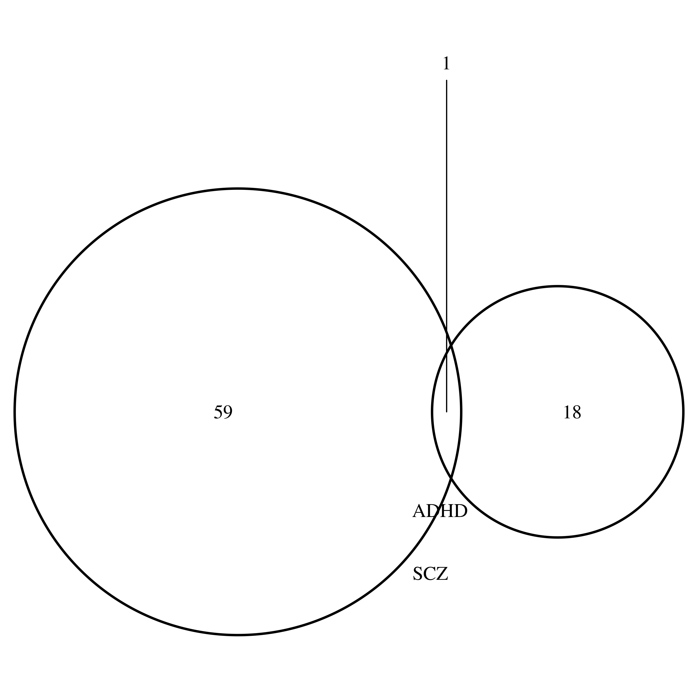
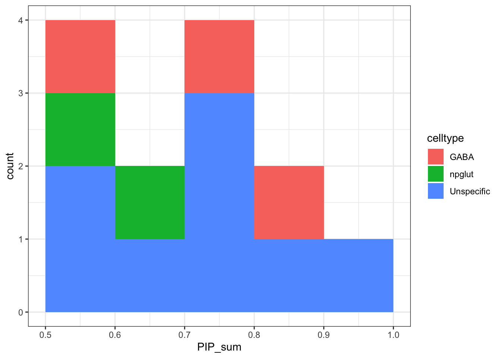

Last updated: 2024-07-18
Checks: 7 0
Knit directory: neuron_stim_eQTL100/
This reproducible R Markdown analysis was created with workflowr (version 1.7.0). The Checks tab describes the reproducibility checks that were applied when the results were created. The Past versions tab lists the development history.
Great! Since the R Markdown file has been committed to the Git repository, you know the exact version of the code that produced these results.
Great job! The global environment was empty. Objects defined in the global environment can affect the analysis in your R Markdown file in unknown ways. For reproduciblity it’s best to always run the code in an empty environment.
The command set.seed(20231109) was run prior to running
the code in the R Markdown file. Setting a seed ensures that any results
that rely on randomness, e.g. subsampling or permutations, are
reproducible.
Great job! Recording the operating system, R version, and package versions is critical for reproducibility.
Nice! There were no cached chunks for this analysis, so you can be confident that you successfully produced the results during this run.
Great job! Using relative paths to the files within your workflowr project makes it easier to run your code on other machines.
Great! You are using Git for version control. Tracking code development and connecting the code version to the results is critical for reproducibility.
The results in this page were generated with repository version 5b0a0b4. See the Past versions tab to see a history of the changes made to the R Markdown and HTML files.
Note that you need to be careful to ensure that all relevant files for
the analysis have been committed to Git prior to generating the results
(you can use wflow_publish or
wflow_git_commit). workflowr only checks the R Markdown
file, but you know if there are other scripts or data files that it
depends on. Below is the status of the Git repository when the results
were generated:
Ignored files:
Ignored: .DS_Store
Ignored: .RData
Ignored: .Rhistory
Ignored: data/.DS_Store
Ignored: data/single_group_ctwas/.DS_Store
Note that any generated files, e.g. HTML, png, CSS, etc., are not included in this status report because it is ok for generated content to have uncommitted changes.
These are the previous versions of the repository in which changes were
made to the R Markdown
(analysis/eQTL_cTWAS_neuroticism.Rmd) and HTML
(docs/eQTL_cTWAS_neuroticism.html) files. If you’ve
configured a remote Git repository (see ?wflow_git_remote),
click on the hyperlinks in the table below to view the files as they
were in that past version.
| File | Version | Author | Date | Message |
|---|---|---|---|---|
| Rmd | 5b0a0b4 | Lifan Liang | 2024-07-18 | wflow_publish(c("analysis/", "docs")) |
| html | ec42627 | Lifan Liang | 2024-05-22 | Build site. |
| Rmd | 05be444 | Lifan Liang | 2024-05-22 | wflow_publish(c("analysis", "docs")) |
| html | 05be444 | Lifan Liang | 2024-05-22 | wflow_publish(c("analysis", "docs")) |
| html | 589729e | Lifan Liang | 2024-04-25 | Build site. |
| Rmd | 8af94ff | Lifan Liang | 2024-04-25 | wflow_publish(c("analysis", "data")) |
The same eQTL derived weights as other cTWAS results
Attaching package: 'dplyr'The following objects are masked from 'package:stats':
filter, lagThe following objects are masked from 'package:base':
intersect, setdiff, setequal, union SNP 0hr_GABA 0hr_nmglut 0hr_npglut 1hr_GABA 1hr_nmglut 1hr_npglut
7535010 4491 2751 5567 4505 2717 5542
6hr_GABA 6hr_nmglut 6hr_npglut
4466 2762 5584 There are 13 eGenes if the cutoff was set to PIP>0.5.

| Version | Author | Date |
|---|---|---|
| 05be444 | Lifan Liang | 2024-05-22 |
Neuroticism score has no overlap with Schizophrennia or Bipolar disorder
Loading required package: gridLoading required package: futile.logger[1] 1
All the 13 significant genes are dynamic.
Welcome to enrichR
Checking connection ... Enrichr ... Connection is Live!
FlyEnrichr ... Connection is Live!
WormEnrichr ... Connection is Live!
YeastEnrichr ... Connection is Live!
FishEnrichr ... Connection is Live!
OxEnrichr ... Connection is Live!Uploading data to Enrichr... Done.
Querying GO_Biological_Process_2023... Done.
Parsing results... Done.An eGene is assigned to a cell type if over 60% of the PIP sum are from that cell type. In the case of neuroticism, most genes are shared across cell types.
GABA npglut Unspecific
3 2 8 
| Version | Author | Date |
|---|---|---|
| 05be444 | Lifan Liang | 2024-05-22 |
sessionInfo()R version 4.1.2 (2021-11-01)
Platform: x86_64-apple-darwin17.0 (64-bit)
Running under: macOS Big Sur 10.16
Matrix products: default
BLAS: /Library/Frameworks/R.framework/Versions/4.1/Resources/lib/libRblas.0.dylib
LAPACK: /Library/Frameworks/R.framework/Versions/4.1/Resources/lib/libRlapack.dylib
locale:
[1] en_US.UTF-8/en_US.UTF-8/en_US.UTF-8/C/en_US.UTF-8/en_US.UTF-8
attached base packages:
[1] grid stats graphics grDevices utils datasets methods
[8] base
other attached packages:
[1] ggplot2_3.3.5 enrichR_3.2 VennDiagram_1.7.1
[4] futile.logger_1.4.3 dplyr_1.0.7 workflowr_1.7.0
loaded via a namespace (and not attached):
[1] Rcpp_1.0.11 getPass_0.2-2 ps_1.6.0
[4] assertthat_0.2.1 rprojroot_2.0.2 digest_0.6.29
[7] utf8_1.2.2 R6_2.5.1 futile.options_1.0.1
[10] WriteXLS_6.4.0 evaluate_0.14 httr_1.4.2
[13] highr_0.9 pillar_1.7.0 rlang_1.0.0
[16] curl_4.3.2 rstudioapi_0.13 whisker_0.4
[19] callr_3.7.0 jquerylib_0.1.4 DT_0.26
[22] rmarkdown_2.11 labeling_0.4.2 stringr_1.4.0
[25] htmlwidgets_1.5.4 munsell_0.5.0 compiler_4.1.2
[28] httpuv_1.6.5 xfun_0.29 pkgconfig_2.0.3
[31] htmltools_0.5.2 tidyselect_1.1.1 tibble_3.1.6
[34] fansi_1.0.2 crayon_1.4.2 withr_2.4.3
[37] later_1.3.0 jsonlite_1.7.3 gtable_0.3.0
[40] lifecycle_1.0.1 DBI_1.1.2 git2r_0.29.0
[43] magrittr_2.0.2 formatR_1.11 scales_1.1.1
[46] cli_3.1.1 stringi_1.7.6 farver_2.1.0
[49] fs_1.5.2 promises_1.2.0.1 bslib_0.3.1
[52] ellipsis_0.3.2 generics_0.1.2 vctrs_0.3.8
[55] cowplot_1.1.1 rjson_0.2.21 lambda.r_1.2.4
[58] tools_4.1.2 glue_1.6.1 purrr_0.3.4
[61] crosstalk_1.2.0 processx_3.5.2 fastmap_1.1.0
[64] yaml_2.2.2 colorspace_2.0-2 knitr_1.37
[67] sass_0.4.1